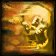
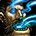
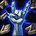

Leveling 1-60
Tap a level to open it. Check it off and it collapses. Levels 1-30 match the beta; 31-60 is mostly unannounced.
- New Lesser Heal
- New Power Word: Fortitude
- New
 Smite
Smite
- Start in Coldridge Valley, Dun Morogh. Grab the new Gnome Priest letter (Hallowed Memorandum). Gnomes have no robe quest. [WoW Forever DB]
- New Shadow Word: Pain
- R2 Lesser Heal
- Shadow Word: Pain: DoTs tag a mob instantly in Forever, so open with it when you compete for tags. [WoW Forever DB]
- Enchanting makes your own early wands (Novice's Practice Wand from 1, Lesser Magic Wand at 5). [WoW Forever DB]
- New Power Word: Shield
- R2 Smite
- Power Word: Shield: cast it before every pull. It also stops pushback. [WoW Forever DB]
- New Confounding Flash New in Forever
- New Mind Blast
- New Resurrection
- R3 Lesser Heal
- R2 Shadow Word: Pain
- Talents open. Ironforge: High Priestess Mims teaches Confounding Flash (new Gnome quest). Head to Loch Modan. [WoW Forever DB]
- Hall of Thanes (new, under Ironforge): Deepblaze wand (18.5 dps) and Golemheart Stave. [WoW Forever DB]
- New Cure Disease
- New Psychic Scream
- R3 Smite
- R2
 Renew
Renew
- New Heal
- R2 Mind Blast
- New Contingency Plan New in Forever
- New Devouring Plague
- New

Fear Ward - New
 Flash Heal
Flash Heal - New
 Holy Fire
Holy Fire - New Mind Soothe
- New Shackle Undead
- New Holy Nova talent spell
- New
 Inner Focus talent spell
Inner Focus talent spell - New

Mind Flay talent spell - R2
 Fade
Fade - R3 Renew
- R2
 Inner Fire
Inner Fire
- Big toolkit level. High Priestess Mims (Ironforge) teaches Contingency Plan (new Gnome quest). [WoW Forever DB]
- Route: Redridge, then Wetlands, Duskwood and Ashenvale. [WoW Forever DB]
- New Mind Vision
- R4 Smite
- R3 Mind Blast
- R2 Resurrection
- R2 Heal
- New Binding Heal New in Forever talent spell
- New

Vampiric Embrace talent spell
- Blackfathom Deeps: Gravestone Scepter (29 dps) from Blackfathom Villainy, the best quest wand before 30. [WoW Forever DB]
- R4 Shadow Word: Pain
- R4 Renew
- R2 Flash Heal
- Vampiric Embrace: kills while it's up also trigger Spirit Tap. [WoW Forever DB]
- R4 Mind Blast
- R2 Psychic Scream
- R3 Heal
- R2 Devouring Plague
- R2 Holy Nova needs talent
- R2 Mind Flay needs talent
- New Divine Spirit
- New Mind Control
- New
 Prayer of Healing
Prayer of Healing - New Shadow Protection
- New Penance New in Forever talent spell
- New Silence talent spell
- R5 Smite
- R5 Power Word: Shield
- R3 Fade
- R3 Inner Fire
- R2 Contingency Plan New in Forever
- R3 Holy Fire
- New Abolish Disease
- New Shadow Word: Death New in Forever
- R5 Renew
- R3 Flash Heal
- R2 Mana Burn
- R2 Binding Heal New in Forever needs talent
- New
 Levitate
Levitate - R5 Shadow Word: Pain
- R5 Mind Blast
- R3 Resurrection
- R4 Heal
- R4 Power Word: Fortitude
- R6 Power Word: Shield
- R2 Dispel Magic
- R3 Devouring Plague
- R4 Holy Fire
- R3 Holy Nova needs talent
- R3 Mind Flay needs talent
- R2 Mind Soothe
- R6 Smite
- R6 Renew
- R4 Flash Heal
- R3 Binding Heal New in Forever needs talent
- New Greater Heal
- New Lightwell
- New Power Infusion talent spell
- New Prayer of Mending New in Forever talent spell
- New Shadowform talent spell
- R4 Fade
- R6 Mind Blast
- R4 Inner Fire
- R3 Contingency Plan New in Forever
- R2 Shackle Undead
- R3 Mana Burn
- R2 Divine Spirit
- R2 Penance New in Forever needs talent
- R2 Prayer of Healing
- R2 Shadow Word: Death New in Forever
- Dual Specialization opens (class trainer in a capital; Blizzard deep dive). Cost not published. Add Disc as your second spec (Alt: Disc tab).
- Shadowform (42 with Wand Specialization). It blocks healing: keep a cancel-and-heal macro (Bars tab). [WoW Forever DB]
- R7 Renew
- R4 Devouring Plague
- R5 Flash Heal
- R4 Holy Nova needs talent
- R4 Mind Flay needs talent
- R2 Mind Vision
- R4 Binding Heal New in Forever needs talent
- R2 Mind Control
- R7 Smite
- R7 Mind Blast
- R4 Resurrection
- R2 Greater Heal
- New Prayer of Fortitude
- R5 Power Word: Fortitude
- R8 Power Word: Shield
- R6 Holy Fire
- R4 Mana Burn
- R3 Shadow Word: Death New in Forever
- R7 Shadow Word: Pain
- R5 Fade
- R8 Renew
- R5 Inner Fire
- R4 Contingency Plan New in Forever
- R6 Flash Heal
- R5 Binding Heal New in Forever needs talent
- R3 Divine Spirit
- R3 Penance New in Forever needs talent
- R3 Prayer of Healing
- R2 Lightwell
- R2 Prayer of Mending New in Forever needs talent
- R8 Mind Blast
- R5 Devouring Plague
- R5 Holy Nova needs talent
- R5 Mind Flay needs talent
- R3 Mind Soothe
- R3 Greater Heal
- R8 Smite
- R9 Power Word: Shield
- R7 Holy Fire
- New Prayer of Shadow Protection
- R9 Renew
- R4 Psychic Scream
- R7 Flash Heal
- R5 Mana Burn
- R6 Binding Heal New in Forever needs talent
- R3 Shadow Protection
- R4 Shadow Word: Death New in Forever
- New Prayer of Spirit
- R6 Power Word: Fortitude
- R10 Power Word: Shield
- R6 Fade
- R10 Renew
- R6 Inner Fire
- R5 Contingency Plan New in Forever
- R6 Devouring Plague
- R8 Holy Fire
- R6 Holy Nova needs talent
- R6 Mind Flay needs talent
- R3 Shackle Undead
- R4 Divine Spirit
- R4 Penance New in Forever needs talent
- R4 Prayer of Healing
- R5 Prayer of Healing
- R5 Greater Heal
- R3 Lightwell
- R3 Prayer of Mending New in Forever needs talent
- R2 Prayer of Fortitude
- Max level. Endgame gear/talents not published yet.
Alt spec: Discipline
Your main spec is Shadow. This tab is your Disc dual spec (opens at 40, class trainer in a capital; Blizzard deep dive). Swap to it for healer dungeon runs: Shadowform blocks heals.
Discipline leveling order 10-60
Order: WoW Forever DB Discipline leveling (33/13/5). Untested past 30; the source says it is adapted from a Classic route because Force of Will and Divine Spirit don't exist in Forever.
Level 30 healer build (tested in beta)
Wand Specialization 2, Twin Disciplines 5, Mental Strength 4, Mental Agility 1,  Inner Focus 1, Improved Power Word: Shield 3, Meditation 3, Soul Warding 1, Penance 1.
Inner Focus 1, Improved Power Word: Shield 3, Meditation 3, Soul Warding 1, Penance 1.
Projected 60 (31/20/0): adds Renewed Hope 5, Divine Aegis 3 and Power Infusion, with Binding Heal from Holy.
WoW Forever DB Discipline talents (build 1.60.1.70658).
New Disc talents in Forever
- Penance (21-point): heal an ally or damage an enemy, 2 sec channel, 12 sec cooldown.
- Soul Warding (16-point): Power Word: Shield loses its 4 sec cooldown and costs 15% less.
- Renewed Hope: heals on a Weakened Soul target gain crit and shorten Weakened Soul.
- Divine Aegis: crit heals leave a shield (15% of the heal, caps at 1200).
- Power in Light: more Smite and Penance damage on a target with your Shadow Word: Pain or Holy Fire.
WoW Forever DB, Hyjal build 70425 notes (Divine Aegis cap, Power in Light).
Healing a dungeon
- Power Word: Shield on the tank before the pull. Renew on whoever takes damage.
- Penance and Flash Heal for spikes; Heal for steady damage.
- Inner Focus makes the next spell free with +25% crit chance.
- Meditation keeps 50% of your regen going while you cast.
Gear & Stats
Stat priority (WoW Forever DB, Shadow leveling)
- Shadow spell power
- Hit and crit (a close call while leveling)
- Intellect
- Stamina
- Spirit
Wands don't scale with spell damage, so only the wand's own damage per second counts. Wand Specialization adds 25%. A staff with spell power is a good solo weapon.
Weapon
- 1-13: make your own wands with Enchanting (Lesser Magic Wand at 5, Greater Magic Wand 17.5 dps at 13).
- 13-16: Deepblaze (18.5 dps) and Golemheart Stave, Hall of Thanes.
- 17-21: Staff of Westfall (+48 healing), The Defias Brotherhood. Sable Wand was cut to uncommon.
- 25-27: Gravestone Scepter (29 dps, +3 Spirit), Blackfathom Deeps.
- 28-31: Moonbeam Wand (Answered Questions, Ashenvale), Consecrated Wand (31). Best Alliance wand at 30: Thunderwood.
WoW Forever DB weapons on the way. The Excavation Site Healer's Staff quest can't be finished right now.
Gnome priest spells
- Confounding Flash (10): new Gnome Priest spell, quest from High Priestess Mims, Ironforge.
- Contingency Plan (20): new Gnome Priest spell, same trainer.
WoW Forever DB, The Forever Era. Gnome racial passives: unconfirmed for Forever in these sources.
Professions
Enchanting + Tailoring ✔
Enchanting makes your own early wands from level 1. Tailoring makes Priest cloth, including Merchant's Favor recipes. Other crafting professions aren't worth much for a Priest.
Secondary
- Cooking: Well Fed buff food gives stats and +5% XP from kills in Forever. Cooking also makes Campfires.
- First Aid: bandages, and in Forever it can make healing potions. It also adds a Stamina First Aid Kit to Campfires.
WoW Forever DB (well-fed +5% kill XP)
Main spec: Shadow
Shadow is your main spec. The 1-60 rows follow the order below. WoW Forever DB calls Shadow the fastest solo Priest spec; 40-50% of your damage still comes from the wand before 40. 31-60 is untested theory.
Dual spec
Level 40, from a class trainer in a capital city (Blizzard's deep dive). Price isn't published. That's how you'd add Disc as a second spec.
1-60 leveling order (WoW Forever DB)
Order: WoW Forever DB Shadow leveling (13/3/35). Shadowform at 42 because Wand Specialization comes first; skip it for Shadowform at 40. Levels 31-60 untested; beta cap is 30.
Where sources differ (unconfirmed)
- Wowhead Forever level 30 also starts with Wand Specialization, then Spirit Tap, Improved Shadow Word: Pain and 5 points in Shadow Focus.
- The Oct 15 build replaced Improved Fade with Dark Inspiration and Shadow Affinity with Improved Mind Blast (Hyjal).
Solo priority
- Buffs: Power Word: Fortitude and Inner Fire (12+).
- Power Word: Shield before the pull (6+).
- Mind Blast to pull (10+), then Shadow Word: Pain.
- Devouring Plague on long fights (20+). It's pricey before Devouring Contagion.
- Finish with the wand so Spirit Tap procs. Mind Flay (22+) if mana allows.
- From 42: Shadowform; Mind Flay replaces the wand as filler.
Staying alive solo
- Shield first. It absorbs hits and stops spell pushback.
- Vampiric Embrace (27+) heals you through damage.
- Psychic Scream (14) fears 2 enemies at rank 1. Fade drops threat in groups.
- Drink between pulls, not mid-fight. Spirit Tap and Meditation keep regen going while you cast.
Shadow in dungeons
- Shadow Word: Pain on everything; Mind Blast on cooldown, but watch threat.
- Vampiric Embrace heals the party (cooldown cut from 60 to 30 sec in build 70425).
- Dark Inspiration (new) raises the party's Spirit after Mind Blast and full Mind Flays.
Gear to carry
My Bars · Lv
Change the level in the top bar. Gold outline = new at this level. Dashed = placement for 31-60 not confirmed.
Cancel & heal macro (from Lv 42)
#showtooltip Lesser Heal /cancelaura Shadowform /cast Lesser Heal
WoW Forever DB says to keep a cancel-and-heal macro because Shadowform blocks heals. The heal follows your level (Lesser Heal, Heal at 16,  Flash Heal at 20). /cancelaura is standard WoW and wasn't checked against Forever.
Flash Heal at 20). /cancelaura is standard WoW and wasn't checked against Forever.
Not on bars
 Holy Fire, Mana Burn, Mind Soothe, Mind Vision, Mind Control, Fear Ward,
Holy Fire, Mana Burn, Mind Soothe, Mind Vision, Mind Control, Fear Ward,  Levitate, Divine Spirit,
Levitate, Divine Spirit,  Prayer of Healing, Prayer of Fortitude and Prayer of Shadow Protection. Drag them from your spellbook if you want them.
Prayer of Healing, Prayer of Fortitude and Prayer of Shadow Protection. Drag them from your spellbook if you want them.
Learn levels from The Forever Era beta client data (Gnome spells only). Talent spells follow the Shadow order: Mind Flay 22, Vampiric Embrace 27, Silence 35, Shadowform 42. Middle 5-7 follow the spec toggle. Spells after 30 can't be tested in the beta.
Dungeons
35 dungeons, Lv 13-60. Level ranges from Icy Veins Forever. Alliance and shared ones shown; Ragefire Chasm (Horde) left out. ⚠️ = Wowhead says it couldn't test that dungeon in the beta and used Classic data.
Priest dungeon wands and staves
Hall of Thanes (13-16): Deepblaze wand and Golemheart Stave from Old Ironforge Incursion. Deadmines: Staff of Westfall from The Defias Brotherhood. Blackfathom Deeps (25-27): Gravestone Scepter from Blackfathom Villainy, now 7,850 XP.
Source: WoW Forever DB (beta). Stats may change by launch.
Hall of Thanes 13-20 New Shared
Where: Under Ironforge (Old Ironforge). Walk in from the city.
Quests to grab first
- Important Heirlooms · Thom Filch, Old Ironforge (32.6, 44.6)
- The Restless Dead · Afadra Dunwall, Old Ironforge (64.8, 58.4)
- Old Ironforge Incursion · Earthseer Farsen, Gol'Golar Quarry, Dun Morogh
- An Ancient Grudge · Ghostly Attendant, inside the dungeon
- The Treaty of Understanding · Vault item inside the dungeon
New Forever dungeon and the closest one to you.
Shadow loot: Not published for Forever yet.
Ruins of Lordaeron 15-22 New Horde-side quests
Where: Under the Undercity ruins, Tirisfal Glades. Far from Alliance land.
Quests to grab first
- Bloodied Insignia · General Marcus Jonathan, Stormwind
- Crest of Lordaeron · Inside the dungeon
Most quests are Horde-side. Wowhead lists the Alliance quest as 'tbd'.
Shadow loot: Not published for Forever yet.
Wailing Caverns 15-24 Shared
Where: The Barrens, north of the Crossroads. Long trip by boat from Menethil to Theramore, or via Auberdine to Darkshore and Ashenvale.
Quests to grab first
- Trouble at the Docks · Crane Operator Bigglefuzz, Ratchet (63, 37)
- Smart Drinks · Mebok Mizzyrix, Ratchet (62, 37), after Raptor Horns
- Deviate Hides · Nalpak, above the WC entrance (46, 35)
- Deviate Eradication · Ebru, above the WC entrance (46, 35)
- The Glowing Shard · Drops from Mutanus inside
Neutral quests only. Lord Serpentis drops the Journeyman Cooking campfire blueprint (Icy Veins camping).
Shadow loot: Not published for Forever yet.
The Deadmines 17-26 Alliance
Where: Moonbrook, southern Westfall. Ride from Sentinel Hill.
Quests to grab first
- Collecting Memories · Wilder Thistlenettle, Stormwind Dwarven District (65, 21)
- Oh Brother... · Wilder Thistlenettle, Stormwind (65, 21)
- Underground Assault · Shoni the Shilent, Stormwind Dwarven District (55, 13)
- Red Silk Bandanas · Scout Riell, Sentinel Hill, after the Defias chain
- The Defias Brotherhood · Gryan Stoutmantle, Sentinel Hill (chain)
- Destruction in Deadmines · End of chain from Alba Fairmoon (52.6, 53.2)
- The Unsent Letter · Drops from Edwin VanCleef; leads to Stockades
Quest list from Wowhead Forever.
Shadow loot: Not published for Forever yet.
Shadowfang Keep 20-30 Shared
Where: Silverpine Forest, north of Pyrewood. Run north from Hillsbrad / Southshore.
Quests to grab first
- Not known yet.
Quest list from Wowhead Forever.
Shadow loot: Not published for Forever yet.
Blackfathom Deeps 24-32 Alliance
Where: Zoram Strand, western Ashenvale. Boat Menethil to Auberdine, then south.
Quests to grab first
- Knowledge in the Deeps · Gerrig Bonegrip, Forlorn Cave, Ironforge (50, 5)
- Researching the Corruption · Gershala Nightwhisper, Auberdine (38, 43)
- Twilight Falls · Argent Guard Manados, Darnassus Craftsmen's Terrace (55, 24)
- In Search of Thaelrid · Dawnwatcher Shaedlass, Darnassus (55, 24)
- Blackfathom Villainy · Argent Guard Thaelrid, inside
Quest list from Wowhead Forever.
Shadow loot: Not published for Forever yet.
Stormwind Stockades 24-32 Alliance
Where: Stormwind City, Mage Quarter canal entrance.
Quests to grab first
- Quell the Uprising · Warden Thelwater, outside the Stockade (41, 58)
- The Color of Blood · Nikova Raskol, patrols Old Town
- Crime and Punishment · Councilman Millstipe, Darkshire (42, 47)
- What Comes Around... · Guard Berton, Lakeshire (26, 46)
- The Fury Runs Deep · Motley Garmason, Dun Modr, Wetlands (after The Dark Iron War)
- The Stockade Riots · Warden Thelwater, after The Unsent Letter
Easy to reach. Quests spread over Redridge, Duskwood and Wetlands, so grab them while questing.
Shadow loot: Not published for Forever yet.
Excavation Site: Wetlands 26-33 New Alliance
Where: Wetlands.
Quests to grab first
- Highland Hides · James Halloran, Menethil Harbor (8, 55), after Daily Delivery
- Songblade Search · Dorin Songblade, Redridge (25.6, 46.6)
- Horrors in the Highland · Rethiel the Greenwarden, Wetlands (56.2, 40.6)
- Lost in the Thicket Things · Chain from Llana, Ashenvale (35.0, 48.6)
- Lost Relic Carry / Elder Knowledge · Titan Relic looted inside
New Forever dungeon. Quests from Wowhead (beta).
Shadow loot: Not published for Forever yet.
City of Dalaran 28-35 New Alliance
Where: Alterac Mountains / Hillsbrad area. Exact entrance not published.
Quests to grab first
- Power Overwhelming · High Sorcerer Andromath, Stormwind Mage Quarter
- A Green Sample · Shylamiir, The Park, Stormwind
- Heart of Disruption · Image of Archmage Modera, outside the entrance
- Starving Arcane · Starving Arcane, outside the entrance
New Forever dungeon. Wowhead: 'will be updated through the beta'.
Shadow loot: Not published for Forever yet.
Gnomeregan 29-38 Alliance
Where: Western Dun Morogh. Back door needs the Workshop Key.
Quests to grab first
- Save Techbot's Brain! · Tinkmaster Overspark, Tinkertown (69, 50)
- Essential Artificials · Klockmort Spannerspan, Tinkertown (47, 64)
- Data Rescue · Master Mechanic Castpipe, Tinkertown (69, 48)
- The Grand Betrayal · High Tinker Mekkatorque, Tinkertown (68, 49)
- Gyrodrillmatic Excavationators · Shoni the Shilent, Stormwind (55, 12)
- Gnogaine · Ozzie Togglevolt, Kharanos (45, 49)
Wowhead: not testable in beta, data from Classic. ⚠️
Shadow loot: Not published for Forever yet.
Razorfen Kraul 29-38 Shared
Where: Southern Barrens. Long trip for Alliance.
Quests to grab first
- The Crone of the Kraul · Falfindel Waywarder, Feralas (89, 46)
- Mortality Wanes · Heralath Fallowbrook, inside
- Willix the Importer · Escort, inside
Classic data per Wowhead. ⚠️
Shadow loot: Not published for Forever yet.
Scarlet Monastery: Graveyard 30-38 Shared
Where: Northeast Tirisfal Glades (Horde land). Fly to Southshore and ride north.
Quests to grab first
- Vorrel's Revenge · Vorrel Sengutz, inside
Classic data per Wowhead. ⚠️
Shadow loot: Not published for Forever yet.
Scarlet Monastery: Library 33-41 Shared
Where: Scarlet Monastery, Tirisfal Glades.
Quests to grab first
- Mythology of the Titans · Librarian Mae Paledust, Hall of Explorers, Ironforge (75, 12)
- In the Name of the Light · Raleigh the Devout, Southshore (chain from Brother Anton)
Classic data per Wowhead. Armory and Cathedral need The Scarlet Key. ⚠️
Shadow loot: Not published for Forever yet.
The Drowned City 35-40 New Shared
Where: Not known yet.
Quests to grab first
- Not known yet.
New Forever dungeon. Not known yet.
Shadow loot: Not published for Forever yet.
Scarlet Monastery: Armory 36-44 Shared
Where: Scarlet Monastery. Needs The Scarlet Key.
Quests to grab first
- In the Name of the Light · Raleigh the Devout, Southshore
Classic data. ⚠️
Shadow loot: Not published for Forever yet.
Razorfen Downs 37-46 Shared
Where: Barrens / Thousand Needles border.
Quests to grab first
- Bring the Light · Archbishop Benedictus, Stormwind Cathedral (39, 27)
- A Host of Evil · Myriam Moonsinger, outside the portal
- Scourge of the Downs / Extinguishing the Idol · Belnistrasz, inside
Classic data. ⚠️
Shadow loot: Not published for Forever yet.
Scarlet Monastery: Cathedral 38-46 Shared
Where: Scarlet Monastery. Needs The Scarlet Key.
Quests to grab first
- In the Name of the Light · Raleigh the Devout, Southshore
Classic data. ⚠️
Shadow loot: Not published for Forever yet.
Krol'dok Stronghold 40-45 New Shared
Where: Not known yet.
Quests to grab first
- Not known yet.
New Forever dungeon. Not known yet.
Shadow loot: Not published for Forever yet.
Uldaman 41-51 Alliance
Where: Badlands, northeast. Ride south from Loch Modan.
Quests to grab first
- The Lost Dwarves · Prospector Stormpike, Hall of Explorers (75, 12)
- Reclaimed Treasures · Krom Stoutarm, Hall of Explorers (74, 9)
- Uldaman Reagent Run · Ghak Healtouch, Thelsamar (37, 49)
- Agmond's Fate · Prospector Ironband, Loch Modan (65, 65), chain
- The Lost Tablets of Will · Advisor Belgrum, Hall of Explorers, long chain
- The Platinum Discs · Inside, after Archaedas
Classic data. ⚠️
Shadow loot: Not published for Forever yet.
Zul'Farrak 44-54 Shared
Where: Northwest Tanaris.
Quests to grab first
- Nekrum's Medallion · Thadius Grimshade, Nethergarde Keep (chain)
- Divino-matic Rod · Chief Engineer Bilgewhizzle, Gadgetzan
- Scarab Shells · Tran'rek, Gadgetzan
- Troll Temper · Trenton Lighthammer, Gadgetzan
- Tiara of the Deep · Tabetha, Dustwallow Marsh
- Gahz'rilla · Wizzle Brassbolts, Shimmering Flats
Classic data. Mallet of Zul'Farrak summons the end boss. ⚠️
Shadow loot: Not published for Forever yet.
Maraudon 46-55 Shared
Where: Southwest Desolace.
Quests to grab first
- Shadowshard Fragments · Archmage Tervosh, Theramore
- Vyletongue Corruption · Talendria, Nijel's Point
- Corruption of Earth and Seed · Keeper Marandis, Nijel's Point
- Legends of Maraudon · Cavindra, outside the instance
Classic data. ⚠️
Shadow loot: Not published for Forever yet.
Alcaz Island Prison 48-53 New Shared
Where: Not known yet (name suggests Alcaz Island, Dustwallow Marsh — unconfirmed).
Quests to grab first
- Not known yet.
New Forever dungeon. Not known yet.
Shadow loot: Not published for Forever yet.
Sunken Temple 50-60 Alliance
Where: Swamp of Sorrows.
Quests to grab first
- Into The Temple of Atal'Hakkar · Brohann Caskbelly, Stormwind Dwarven District (chain)
- Secret of the Circle · Marvon Rivetseeker, Tanaris
- Jammal'an the Prophet · Atal'ai Exile, Hinterlands
Classic data. ⚠️
Shadow loot: Not published for Forever yet.
Blackrock Depths 52-60 Alliance
Where: Blackrock Mountain, between Searing Gorge and Burning Steppes.
Quests to grab first
- Overmaster Pyron / Incendius! · Jalinda Sprig, Morgan's Vigil
- The Good Stuff · Oralius, Morgan's Vigil
- Hurley Blackbreath · Ragnar Thunderbrew, Kharanos
- Kharan Mighthammer · King Magni, Ironforge (chain)
- Marshal Windsor / Jail Break! · Marshal Maxwell, Morgan's Vigil (chain)
Classic data. Shadowforge Key opens most of it. ⚠️
Shadow loot: Not published for Forever yet.
Dire Maul (East) 54-60 Shared
Where: Central Feralas.
Quests to grab first
- Lethtendris's Web · Latronicus Moonspear, Feathermoon Stronghold
- Pusillin and the Elder Azj'Tordin · Azj'Tordin, Lariss Pavilion
Classic data. ⚠️
Shadow loot: Not published for Forever yet.
Blackmaw Hold 55-60 New Shared
Where: Not known yet.
Quests to grab first
- Not known yet.
New Forever dungeon. Not known yet.
Shadow loot: Not published for Forever yet.
Lower Blackrock Spire 55-60 Alliance
Where: Blackrock Mountain.
Quests to grab first
- Put Her Down · Helendis Riverhorn, Morgan's Vigil
- Elven Legends · Scholar Runethorn, Feathermoon
- General Drakkisath's Command · Drop from Overlord Wyrmthalak
Classic data. ⚠️
Shadow loot: Not published for Forever yet.
Dire Maul (North) 56-60 Shared
Where: Feralas. Crescent Key needed.
Quests to grab first
- Free Knot! / Gordok quests · Inside
Classic data. ⚠️
Shadow loot: Not published for Forever yet.
Dire Maul (West) 56-60 Shared
Where: Feralas. Crescent Key needed.
Quests to grab first
- The Madness Within · Shen'dralar Ancient, inside
Classic data. ⚠️
Shadow loot: Not published for Forever yet.
Scholomance 58-60 Alliance
Where: Caer Darrow, Western Plaguelands. Skeleton Key needed.
Quests to grab first
- Barov Family Fortune · Weldon Barov, Chillwind Camp
- Doctor Theolen Krastinov, the Butcher · Eva Sarkhoff, Caer Darrow
- Plagued Hatchlings · Betina Bigglezink, Light's Hope
Classic data. ⚠️
Shadow loot: Not published for Forever yet.
Shaper's Terrace 58-60 New Shared
Where: Not known yet.
Quests to grab first
- Not known yet.
New Forever dungeon. Not known yet.
Shadow loot: Not published for Forever yet.
Stratholme (Main Gate) 58-60 Shared
Where: North Eastern Plaguelands.
Quests to grab first
- The Archivist · Duke Nicholas Zverenhoff, Light's Hope
- The Great Fras Siabi · Smokey LaRue, Light's Hope
Classic data. ⚠️
Shadow loot: Not published for Forever yet.
Stratholme (Service Gate) 58-60 Shared
Where: Eastern Plaguelands. Key to the City for the side door.
Quests to grab first
- Houses of the Holy · Leonid Barthalomew, Light's Hope
- The Active Agent · Betina Bigglezink, Light's Hope
Classic data. ⚠️
Shadow loot: Not published for Forever yet.
Upper Blackrock Spire 59-60 Alliance
Where: Blackrock Mountain. Needs the Seal of Ascension.
Quests to grab first
- Doomrigger's Clasp · Mayara Brightwing, Morgan's Vigil
- General Drakkisath's Demise · Marshal Maxwell, Morgan's Vigil
Classic data. ⚠️
Shadow loot: Not published for Forever yet.
Ranges: Icy Veins Forever. Quests: Wowhead Forever dungeon quests (beta, updated Oct 11). Locations are the usual entrances; new Forever dungeons without a published location say Not known yet.
Back from a break
30-second rotation
- Fortitude + Inner Fire up.
- Shield, then Mind Blast, then Shadow Word: Pain.
- Wand the kill yourself (Spirit Tap).
- Devouring Plague on long fights. Mind Flay from 22.
- Low health: Flash Heal or Renew. Bad pull: Psychic Scream.
- From 42: Shadowform on; cancel it to heal.
Bag check
Notes
My Character
Credits
Spell, item, class, race and zone icons © Blizzard Entertainment, downloaded once from Wowhead's public icon CDN (wow.zamimg.com) and bundled in this app. Icon choices and spell/talent links: The Forever Era. Personal, non-commercial fan page; not affiliated with Blizzard.